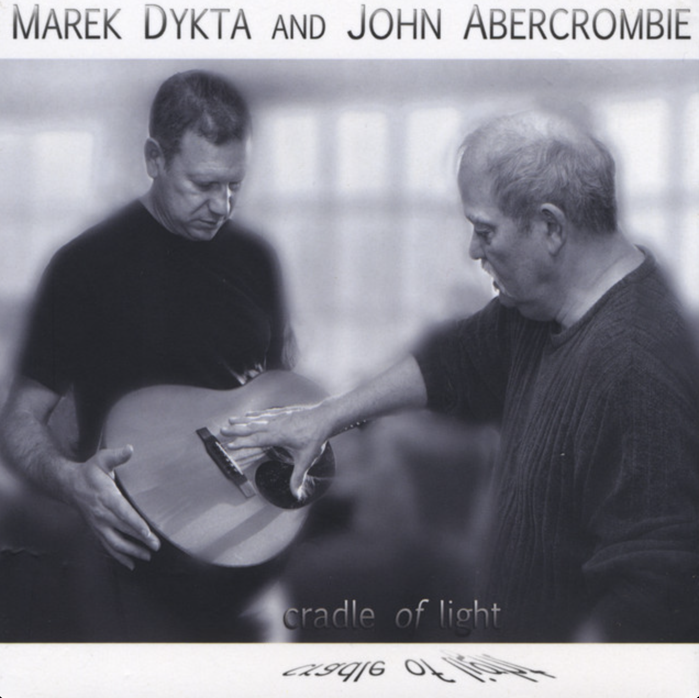

Waltz for Agnes Transcription (Marek Dykta)
I haven't listened to this tune of Abercrombie's 2009 record in ages but I just love it. Whenver I listen to John Abercrombie’s recordings, I am always struck again by how uniquely he approaches harmony — not as a set of functional signposts, but making it all about color. Abercrombie’s harmonic language has always struck me as being so similiar to impressionist and post imporessionist composers - figures like Debussy or Messiaen. His chords drift around often moving in unexpected but emotionally compelling ways.
In this chart (which you can download here in PDF or MuseScore formats), just check out some of the striking harmonic shifts, from E♭m7(sus4) to G7(#5), then A/B, and later E♭maj7(#5). These are not part of any functional progression in the traditional sense, but instead unfold as a kind of textural progression, with each chord offering a different harmonic color. But still the piece somehow has a sense of form, because of its repetition in both melody and harmony.
I have always assumed Waltz for Agnes was a John Abercrombie composition—it sounds so much like him: the airy voicings, the harmony, his always understated lyricism. But it turns out the piece was written by the other guitarist on the album, Marek Dykta. Such a surprise, to hear Dykta access a similarly rich harmonic landscape, but still in a way that feels personal and inventive.
The other really cool thing here is the melody. The melody notes in Waltz for Agnes often completely avoid the expected chord tones, instead landing on non-chord tones that generate expressive friction. Maybe this is why it makes me think of Messiaen. It reminds me of Messiaen’s modes of limited transposition, especially his sub-modes, where scales are constructed to include things like major sevenths within dominant sonorities—treating dissonance as an integral, colorful part of the tonality, not as tension to be resolved. I recently had some great discussions around this topic at the AJIRN 2025 jazz research conference in Auckland, where I hear some presenters explored Messiaen’s influence on their modern jazz improvisation pracice.
The big takeway about pieces like this - to remind us that, with the right attention to voice leading and color and form, all notes can work. Harmony becomes less about rules and more about possibility. That freedom—so central to Abercrombie’s voice and fully embraced by Dykta here—is what makes this piece resonate. Both composer and soloist room to explore shifting, ambiguous tonalities, and to find beauty in unexpected relationships between sound and line.